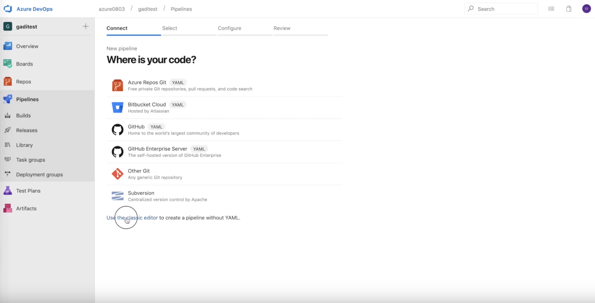
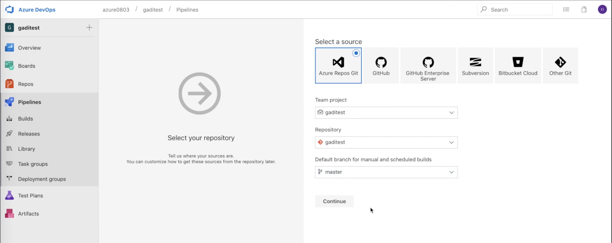
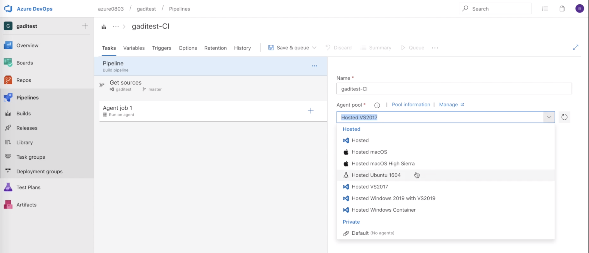
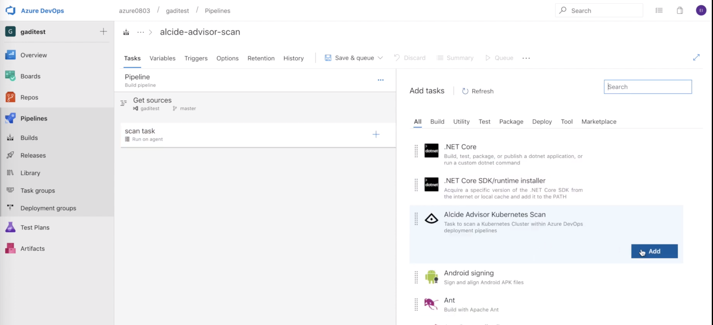
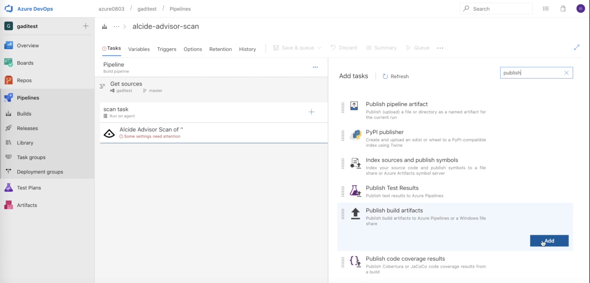
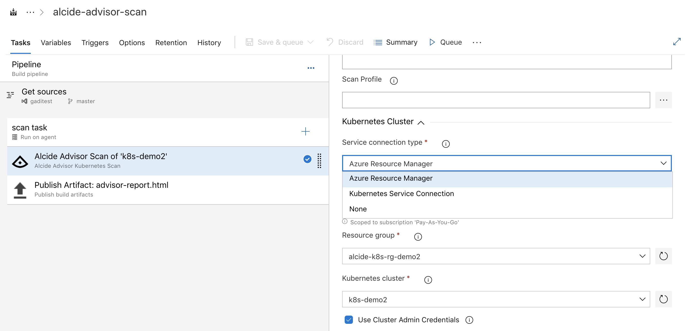
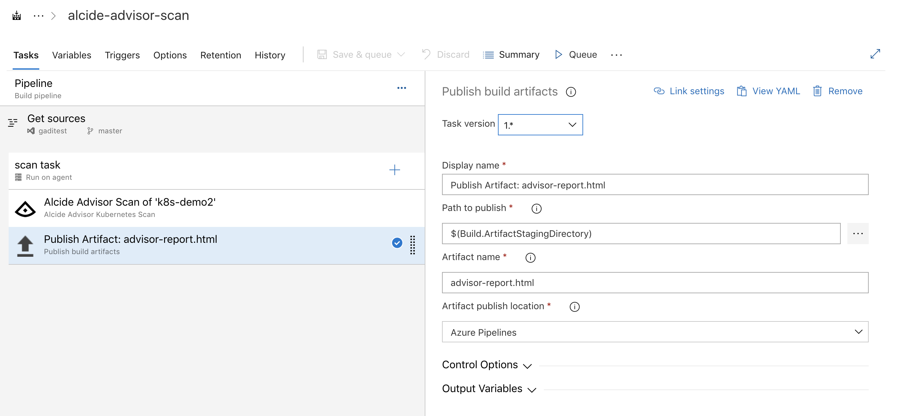
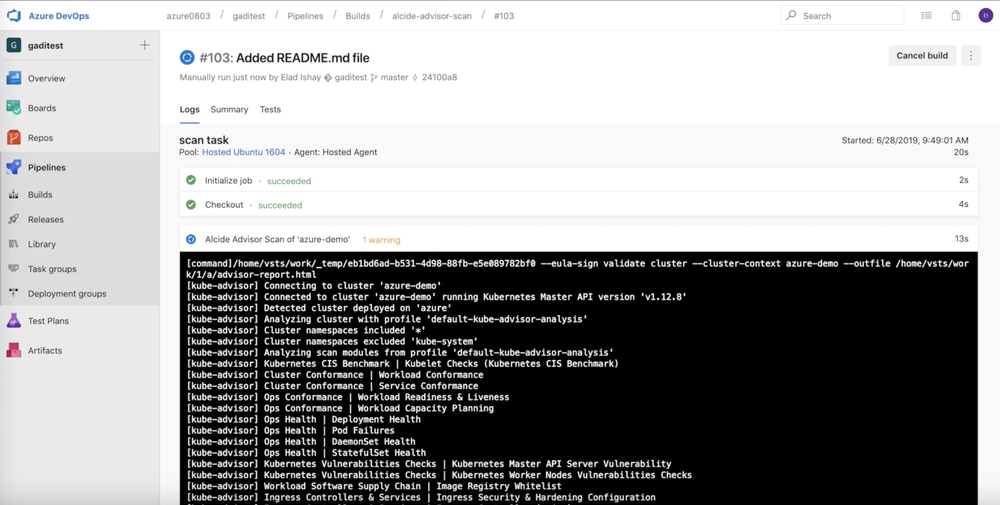
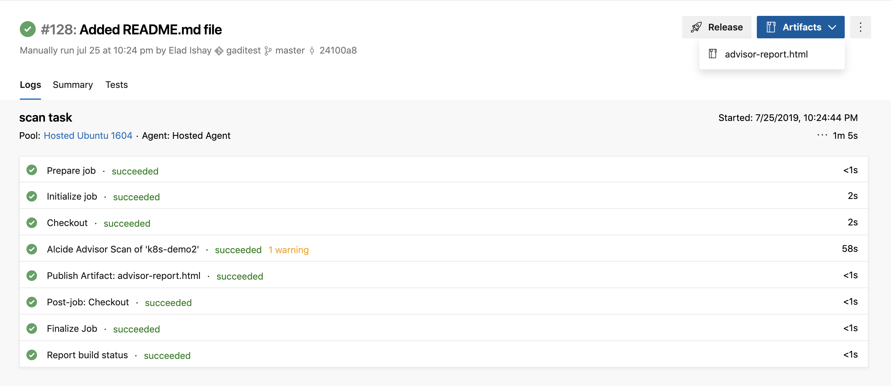

In this tutorial we will learn about Alcide Kubernetes Advisor, and how we can integrate it with Azure DevOps to implement continuous security and cluster hygiene for one or more Kubernetes clusters.

Alcide Advisor is an agentless Kubernetes audit, compliance and hygiene scanner that's built to ensure a friction free DevSecOps workflow. Alcide Advisor can be plugged in early in the development process and before moving to production.
With Alcide Advisor, the security checks you can cover includes:
- Kubernetes infrastructure vulnerability scanning.
- Hunting misplaced secrets, or excessive privileges for secret access.
- Workload hardening from Pod Security to network policies.
- Istio security configuration and best practices.
- Ingress Controllers for security best practices.
- Kubernetes API server access privileges.
- Kubernetes operators security best practices.
- Deployment conformance to labeling, annotating, resource limits and much more ...
- Azure DevOps account
- Azure AKS cluster running as part of your Azure Subscription

We are going to create an Azure Pipeline that runs a security scan of an AKS cluster with the buitin scan profile.
Create a build pipeline
- Select Pipelines in the left menu
- Select a Git repository - in this tutorial we will use the Classic Editor - see image

- Select your Git Repo - in this tutorial we chose Azure DevOps Git repo.

Alcide Kubernetes Advisor tasks require a linux based running environment and therefore we will select Ubuntu 1604 in the drop list

Add Alcide Kubernetes Advisor Task to our pipeline

Add Publish Build Artifacts Task to our pipeline

- Select Azure Resource Manager in the drop down list Service connection type
- Select the Subscription with your AKS Kubernetes cluster you'd like to scan
- Select the Resource group where your target cluster runs
- Select your AKS Cluster

Configure Publish Build Artifacts Task
- For Path to publish use $(Build.ArtifactStagingDirectory)
- For Artifact Name use advisor-report

Run the pipeline by clicking the Save & Queue button
To run the pipeline, simply click the Save & Queue button on the menu.
At this point a build host will spin up and run our pipeline tasks.

- Click on the Artifcats button in the upper right corner
- Navigate through the menu to download the generated scan report
